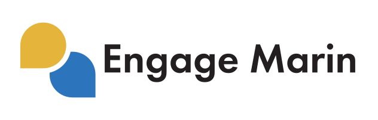
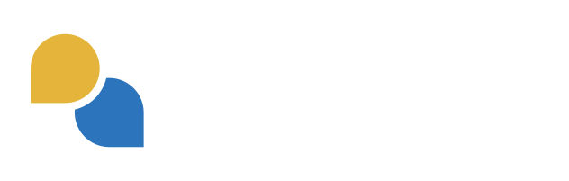

Engage Marin
Approved Engage Marin logos, colors, and type guidance in one easy place.
Website: engage.marincounty.gov
Updated October 13, 2026
Purpose
Approved Engage Marin logos, colors, and type guidance in one easy place.
- Show the Engage Marin name and mark the same way everywhere.
- Make it easy to find the right logo for light and dark backgrounds.
- Keep Engage Marin connected to the County of Marin brand.
Logos
- Use the logo files as supplied. Do not recolor, stretch, or redraw them.
- Use the full color logo on light backgrounds.
- Use the reversed or white logo on dark backgrounds such as black (#231f20).
- Use the mark by itself only when the full logo will not fit or the name already appears nearby.
- If you do not find the logo you need, contact the Public Information Office.

Primary Logo Preferred
Use this logo on light backgrounds for most print, digital, and presentation materials.



Primary Logo Reversed
Use this logo on dark backgrounds. The mark keeps its colors and the lettering is white.


Primary Logo Black
Use this one-color logo on light backgrounds when color is not available.



Primary Logo White
Use this one-color logo on dark backgrounds when color is not available.


Mark
Use the mark by itself when space is tight, such as a social media profile picture.


Mark Black
Use this one-color mark on light backgrounds.


Mark White
Use this one-color mark on dark backgrounds.


QR code logos
The default is the square Engage Marin mark. Use it for the center of a QR code made in Marin Links.

Color palette
Gold and blue come from the mark. Black is used for the lettering.
Red and green are County of Marin colors that may be used as supporting accents.
White is used for the lettering and one-color logos on dark backgrounds.
Typography
- Jost
- headings
File formats
Use the supplied Engage Marin logo files as downloaded; do not recolor, distort, or recreate them.
- SVG — Vector artwork that can be enlarged without losing quality. Vector artwork can be enlarged without losing quality.
- Web & electronic
- PNG — Transparent PNG exports for web, on-screen, and Microsoft Office use. (RGB)